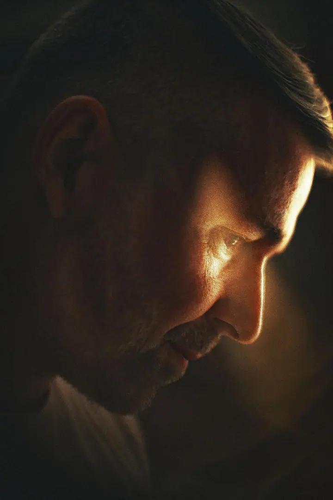

Fine art portrét
Výtvarný portrét, u kterého můžu nejvíc popustit uzdu svým uměleckým sklonům. Pracuji se světlem, stínem a nápadem, aby vznikl obraz s vlastním příběhem.

Portrétní a fine art fotografka
Jmenuji se Lenka Laňková, ale říká se mi Laňka, a fotím portréty ve svém ateliéru v centru Prahy. Nejvíc mě baví výtvarná a fine art fotka, ale vaši osobitost a jiskru ráda zachytím i při serióznějším byznys focení.
Zeptat se na termín
Výtvarný portrét, u kterého můžu nejvíc popustit uzdu svým uměleckým sklonům. Pracuji se světlem, stínem a nápadem, aby vznikl obraz s vlastním příběhem.
Seriózní portrét pro web, LinkedIn nebo firemní prezentaci. I tady se snažím, aby z fotky byla vidět vaše osobitost a jiskra.
Jemné a ženské focení, při kterém se můžete cítit uvolněně a krásně. Citlivě vás povedu a o pohodu se postarám.
Miluji kreativitu, umění a hluboký pohled do očí. Proto jsem se zaměřila na portrétní fotografii. Nejraději fotím výtvarné a fine art portréty, kde můžu nejvíc popustit uzdu svým uměleckým sklonům.
Prozradím vám jedno tajemství: sama se opravdu nerada fotím. Proto dobře rozumím obavám, se kterými na focení přicházíte, a dávám si velký pozor, abyste se se mnou cítili uvolněně a krásně. Spoléhám na citlivé vedení, smysl pro humor a empatii.
Fotím v ateliéru v centru Prahy, venku třeba na Petříně nebo na nábřeží, případně kdekoli jinde po domluvě. Chci, abyste si z focení kromě fotek odnesli i hezký zážitek.
Zavolejte mi nebo napište a probereme, jaký portrét si představujete: fine art, byznys, beauty nebo těhotenský. Domluvíme se, jestli budeme fotit v ateliéru, venku, nebo jinde.
Poradím vám s oblečením a doplňky, aby ladily se stylem focení. Probereme i vaše obavy, abyste věděli, co vás čeká.
Na focení vás budu citlivě vést a nebude chybět humor. Nemusíte umět pózovat, stačí přijít a nechat se vést.
Ze snímků vyberete ty, které se vám líbí, a já je pečlivě upravím. Hotové fotky vám pak předám v elektronické podobě.
Určitě. Sama se nerada fotím, takže vaše obavy dobře znám. Budu vás citlivě vést a postarám se, abyste se cítili uvolněně.
Ve svém ateliéru v centru Prahy, v okolí třeba na Petříně nebo na nábřeží. Jiné místo se dá domluvit.
Záleží na typu focení. Před focením spolu probereme oblečení i doplňky, aby se k vám i ke stylu fotek hodily.
Cena se odvíjí od typu focení a jeho rozsahu. Napište mi nebo zavolejte a ráda vám připravím nabídku na míru.